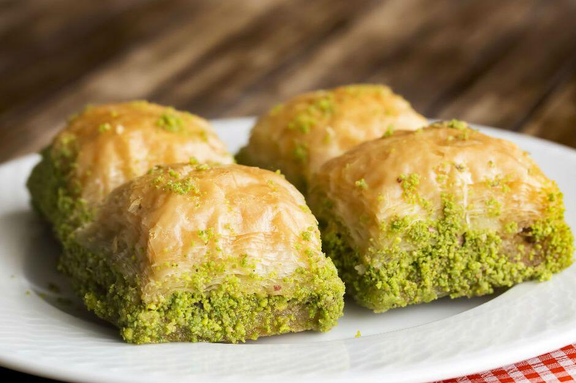

Turkey
Baklava
Baklava is a rich, sweet dessert pastry made of layers of filo filled with chopped nuts and sweetened and held together with syrup. It is well known around the world and is an amazing dessert to serve.

Equipment needed:
- Saucepan
- Measuring cup
- Spout/gravy boat
- Oven
- Food Processor
- Bowl
- Wire Rack
- Sharp Knife
- TableSpoon
- Teaspoon
- Foil
Ingredients:
For Sugar Syrup:
- 350g granulated sugar
- 3/4 cup water
- 28g glucose syrup (optional but reccomended
- A squeeze of lemon
- 1/8 teaspoon table salt
- 1 tablespoons orange blossom water
For the Nut Filling
- 340g shelled, raw unsalted pistachios, plus more for garnish
For the Pastry:
- 500g packages phyllo dough, a total of 30 sheets thawed
- 255g melted ghee (or 1 ½ cups (340g/ 12oz) unsalted butter, clarified per instructions below, melted, and cooled slightly) (1 1/8 cup clarified
Instructions
To Make The Sugar Syrup:
- In a small saucepan, combine the sugar, water, glucose syrup (if using), lemon and salt, and bring to a full boil over medium-high heat, stirring occasionally to ensure that the sugar dissolves. Once boiled, take off heat and stir in the orange blossom water.
- Transfer to a measuring cup with a spout or gravy boat and set aside to cool completely before using. (Cooled syrup can be refrigerated in an airtight container up to 4 days; bring back to room temperature before using)
To Make The Pastry:
- Adjust oven rack to lower-middle position and heat oven to 150C/300F.
- Pulse pistachios in food processor until very finely chopped, about fifteen 1-second pulses; transfer to a bowl.
- Brush a 13X9-inch baking pan with ghee or clarified butter. Unwrap and unfold phyllo on a large cutting board and smooth out with hands to flatten. Using the pan as a guide, adjust the size of the phyllo by cutting off excess to fit perfectly into the pan. Cover phyllo with plastic wrap, then top with a damp kitchen towel to prevent drying.
- Place 1 sheet of phyllo in the bottom of the prepared pan and brush with the ghee or clarified butter until completely coated. Layer 7 more sheets of phyllo into the pan, brushing each sheet with more ghee/butter. You should now have a total of 8 layers of phyllo. Top with 1 cup of the ground pistachios and spread evenly.
- Layer 6 more sheets of phyllo into the pan, brushing each layer with more ghee/ clarified butter, then top with another 1 cup of pistachios. Repeat with 6 more sheets of phyllo, more ghee/butter, and the remaining cup of pistachios.
- Layer the remaining 10 sheets of phyllo into the pan using the nicest, most intact sheets, brushing each layer, except the final layer, with more ghee/ clarified butter. Working from the center outward, use the palm of your hands to compress the layers and press out any air pockets. Use a sharp knife to cut the baklava into diamonds; 5 cuts vertically and about 8 cuts diagonally. Brush the remaining ghee/clarified butter (which should be around 4 tablespoons) over the surface.
- Bake the baklava until golden and crisp, about 1 1/2 to 1 3/4 hours, rotating the pan halfway through baking.
- Immediately after removing the baklava from oven, pour the cooled syrup over cut lines until about 2 tablespoons remain (syrup will sizzle when it hits hot pan); drizzle remaining syrup over the surface. Garnish center of each piece with pinch of ground pistachios.
- Cool to room temperature on wire rack, about 3 hours, then cover with foil and let stand at least 8 hours before serving. (Once cooled, baklava can be served, but flavor and texture improve if left to stand at least 8 hours. Baklava can be wrapped tightly in foil and kept at room temperature up to 10 days.)
To Clarfy the Butter (if using instead of ghee):
- Melt the 1 1/2 cups (340g/ 12oz) butter slowly over medium low heat until the milk solids have separated from the butterfat. and collected on the bottom of the saucepan. Remove the pan from heat, let the butter settle for 10 minutes, then carefully skim the foam from the surface with a spoon. Slowly pour the clear butterfat into a bowl, leaving all the milk solids behind in the saucepan. You should end up with about 1 1/8 cup (255g/ 9oz) clarified butter.